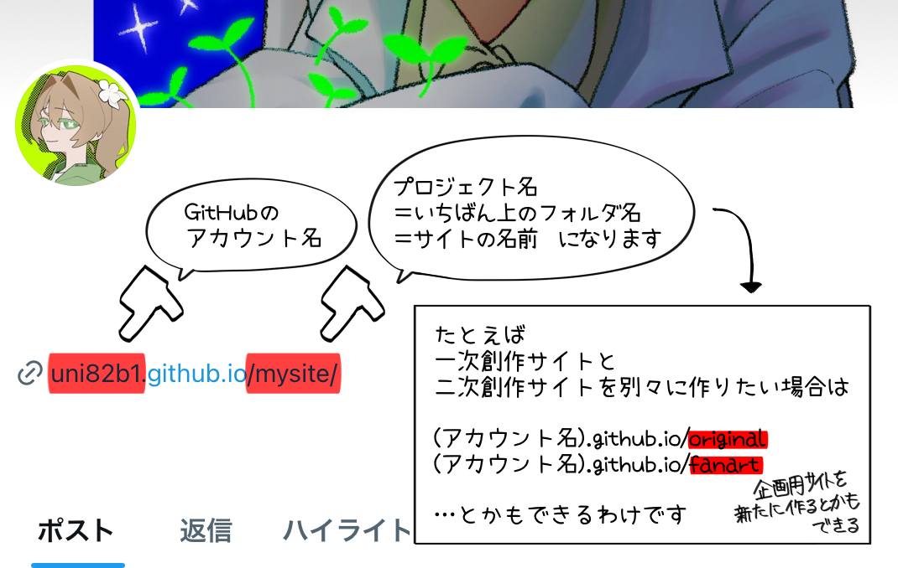
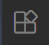
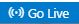
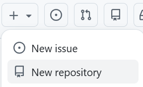
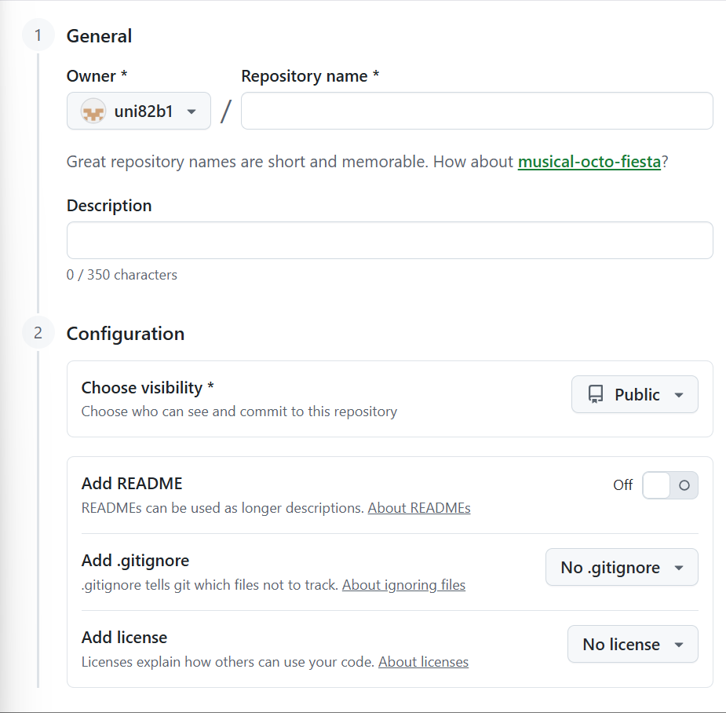
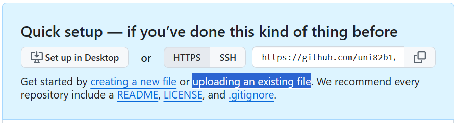
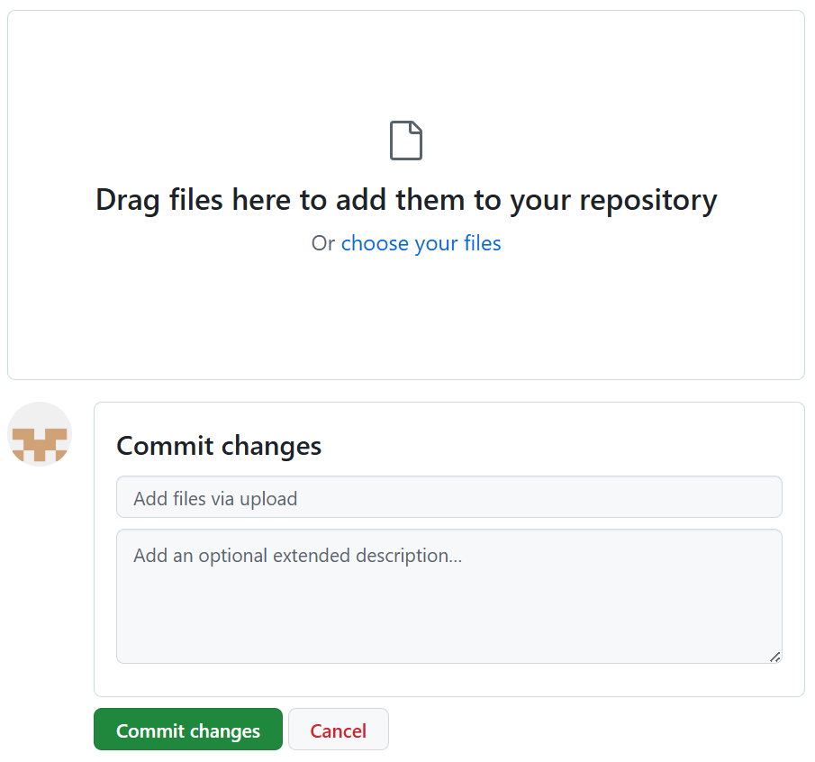
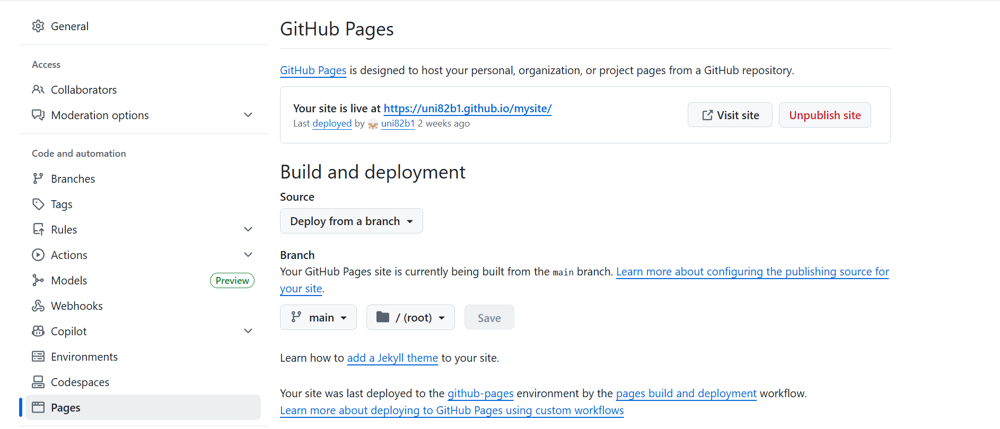
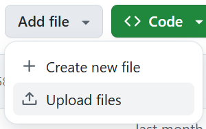

GitHub · Change is constant. GitHub keeps you ahead. · GitHub
（新しいタブで開きます）
メールアドレス、パスワード、アカウント名を入れて終わりです。簡単ですね。

アカウント名はこんな感じでプロジェクト名と共にサイトのURLになります。
Download Visual Studio Code - Mac, Linux, Windows（新しいタブで開きます）
それぞれの環境に合ったものをダウンロードしてください。
ダウンロード後、VScodeを起動します。
画面左端のアクティビティバーにある

のアイコンを押し、以下の拡張機能を導入しましょう。…ローカル環境で実際の動作を確認することができるようになります。
画面下部のステータスバーにある

から使用できます。… VScodeを日本語で使えるようになります。
…タグを編集した際に対のタグを自動的に編集してくれるやつ
…誤った記述をハイライトしてくれるやつ
…インデントが見やすくなるやつ
…参照しているファイルの場所が分かりやすくなるやつ
…内容によって文字の色が変わるやつ
デスクトップでもどこでも、お好みの場所で右クリックしフォルダを作成します。
デスクトップだと家族に見られそうでなんか心配！という場合は
C:\Users\（ユーザー名）こんな感じでユーザー名と共にサイトのURLになります。
検索エンジンやデータ収集Botに対して巡回の許可/不許可を定めるやつ。
検索エンジンにも載せたくない、Botの巡回もされたくない、という場合は
User-agent: *
Disallow: /
…robots.txtというファイルを作成してこの2行をコピペでOK。
（ある程度基本的な構成ができるまで&ある程度セキュリティについて知見を得るまでは載せない方がいいという前提として、） 例えばGoogle検索に出してやってもいいが？という感じなら
User-agent: Googlebot
Allow: *
…とか書いたりすればいいと思います。ちなみにこのコードを書くとGoogleのBotくんは「ほな…✋😎」って感じでサイトの"全て"を漁りだします。𝕏のrobots.txtを読解できるようになったら色々弄ればいいんじゃないですかね。
「AI学習に関してはBlueskyの方が危ない」という声があったのはこれが理由。
bsky.app/robots.txt と検索すればわかるのですがBlueskyのrobots.txtは、
# By default, may crawl anything on this domain.
User-Agent: *
Allow: /
…という記述の通り基本的には全てのデータ収集Botに対して巡回を許可しています（2025/12/25時点）。 一方でx.com/robots.txt を確認してみると、
# Every bot that might possibly read and respect this file
# ========================================================
User-agent: *
Disallow: /
…という感じで、
研究目的だろうがAIだろうが𝕏の巡回や情報収集はさせないよ、Grokはするけど
と言っているわけです（2025/12/25時点）。
とはいえrobots.txtも100%確実なわけではないので、まあ。
いちばん最初に表示される玄関口のページ。
<head>
<!--このページなら「Webサイトの作り方」がここに入る -->
<title>ここにタイトルを入力</title>
<!-- 使用するcssファイルがある場所の相対リンクを記入する -->
<link rel="stylesheet" href="（ファイル名）.css">
<!-- 検索避けをしたい場合 -->
<meta name="robots" content="noindex">
</head>
<body>
<p>Hello, world!</p>
</body>
…index.htmlというファイルを作成してこれをコピペすると、
Hello, world! と表示されます。あとはbody内を自由に編集しましょう。
GitHubにログインし、

New repositoryを押して
Repository nameにサイト名（mysiteとか）を記入します。
（Description以下は特にいじらなくてOK）

Quick setupのuploading an existing fileを押して、

robots.txtとindex.html（というかフォルダの中身）をアップロードし
Commit changesを押します。
zipファイルを上げても動かないから気を付けような！（1敗）

数分待てばSettingsのPagesからサイトを見ることができます！
これでサイトができました！おめでとう、これで君も𝒆𝒏𝒈𝒊𝒏𝒆𝒆𝒓の仲間入りだ！
ローカルで新規ページを作成、または既存ページを編集した後、
GitHubの上部メニューにあるCodeを押し

のUpload filesを押します。このページは編集中です！m(_ _)m